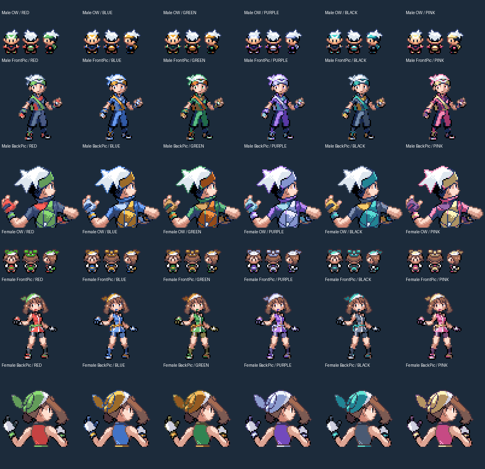
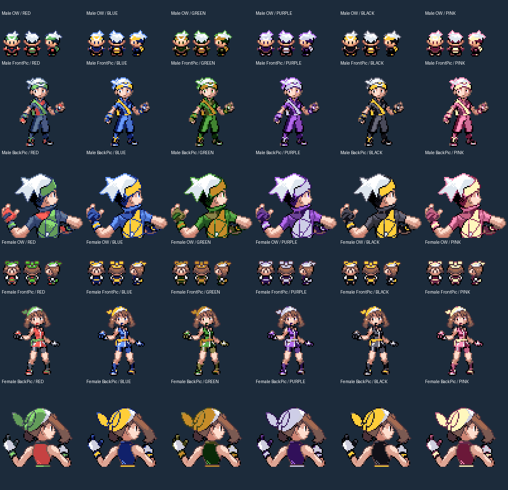

Five authored colorways for Brendan and May. Each sprite size has its own ramp, bags keep their highlights, and shared hair/outline shades stay fixed. Red remains vanilla.
Your review: about 5 minutes. Compare Black, Purple and Pink below, then scan the full sheet. Engineering checks are complete; the remaining decision is whether you like the colors.
Download the tested game + ready-to-play save · Implementation and test notes
The sheets use the actual indexed sprites and GBA RGB5 values. Oak's picker and your trainer card both use the front sprite. Tiny overworld sprites are shown from three directions.


Unzip the download and keep the matching .gba and .sav together. Open the ROM in mGBA and choose Continue. You begin beside Petalburg's pond as May in Black. Walk up and back down to inspect the reflection; open Start → Trainer to compare the larger sprite. The normal build and this save have already passed that route.
The gallery covers the other eleven combinations, Oak's picker, and the send-out animations, so you do not need to start twelve new games.
249 focused checks per build, 26 picker checks per character per build, 12 ordinary-build delivery checks, and all 50 existing regression suites passed. The ten Red comparison frames below are pixel-identical before and after. RGB5 palette snapshots agree with emulator palette RAM; physical handheld display preferences remain subjective.
Live water reflections derive from the current player palette. The old shared Red/Leaf portrait and reflection-file path are unused. The underwater sprite keeps its existing dedicated palette. No new artwork, save layout, or game logic was introduced.